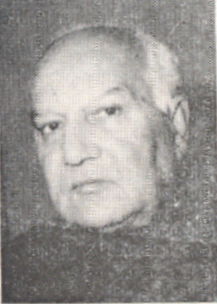

ഗുലാം നബി ആസാദ്

പ്രധാന കാലാവധികൾ:
ആരോഗ്യ കുടുംബക്ഷേമ മന്ത്രാലയം, കാബിനറ്റ് മന്ത്രി
൨൦൦൯ - ൨൦൧൪
പാർലമെന്ററി കാര്യ മന്ത്രാലയം, കാബിനറ്റ് മന്ത്രി
൧൯൯൧ - ൧൯൯൩, ൧൯൯൬ - ൧൯൯൬, ൨൦൦൪ - ൨൦൦൫
സിവിൽ ഏവിയേഷൻ ആൻഡ് ടൂറിസം മന്ത്രാലയം, കാബിനറ്റ് മന്ത്രി
൧൯൯൩ - ൧൯൯൬

മൂന്നാമത് ഇന്ദിരാഗാന്ധി മന്ത്രിസഭ
നിയമ നീതി, കമ്പനി കാര്യ മന്ത്രാലയം
ഉപമന്ത്രി
ഇൻഫർമേഷൻ ആൻഡ് ബ്രോഡ്കാസ്റ്റിംഗ് മന്ത്രാലയം
ഉപമന്ത്രി
രാജീവ് ഗാന്ധി മന്ത്രാലയം
പി വി നരസിംഹ റാവു മന്ത്രിസഭ
1 മൻമോഹൻ സിംഗ് മന്ത്രിസഭ
2 മൻമോഹൻ സിംഗ് മന്ത്രിസഭ
മൂന്നാമത് ഇന്ദിരാഗാന്ധി മന്ത്രിസഭ
കാലാവധി വിവരം
നിയമ നീതി, കമ്പനി കാര്യ മന്ത്രാലയം,
ഉപമന്ത്രി
൧൧ സെപ്റ്റംബർ ൧൯൮൨ - ൮ ഫെബ്രുവരി ൧൯൮൪
ഉത്തരവുകൾ
1_Upload_2421.pdf
1_Upload_2152.pdf

ഇന്ദിരാഗാന്ധി
o-Indira_Gandhi.htmlപ്രധാന മന്ത്രി
൧൪ ജനുവരി ൧൯൮൦ - ൧ നവംബർ ൧൯൮൪

ജഗന്നാഥ് കൗശൽ
o-Jagannath_Kaushal.htmlകാബിനറ്റ് മന്ത്രി
൧൫ ജനുവരി ൧൯൮൨ - ൨൦ ജൂലൈ ൧൯൮൪
ഗുലാം നബി ആസാദ്
o-Ghulam_Nabi_Azad.htmlഉപമന്ത്രി
൧൧ സെപ്റ്റംബർ ൧൯൮൨ - ൮ ഫെബ്രുവരി ൧൯൮൪
പ്രസക്തമായ ഉത്തരവുകൾ
1_Upload_2421.pdf[4]൧൧ സെപ്റ്റം ൧൯൮൨പോർട്ട്ഫോളിയോയുടെ മാറ്റം1_Upload_2365.pdf[48]൨ ഫെബ്രു ൧൯൮൩മന്ത്രിമാരുടെ കൗൺസിൽ1_Upload_2366.pdf[45]൨൪ ഫെബ്രു ൧൯൮൩മന്ത്രിമാരുടെ കൗൺസിൽ1_Upload_2152.pdf[5]൮ ഫെബ്രു ൧൯൮൪പോർട്ട്ഫോളിയോയുടെ മാറ്റം